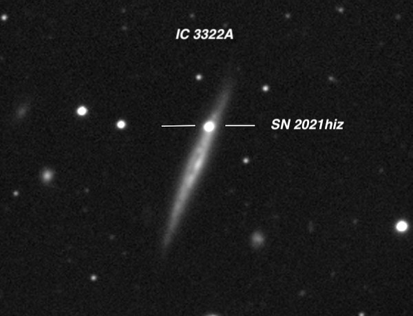
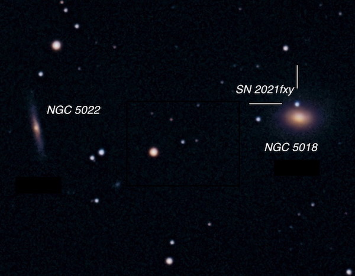
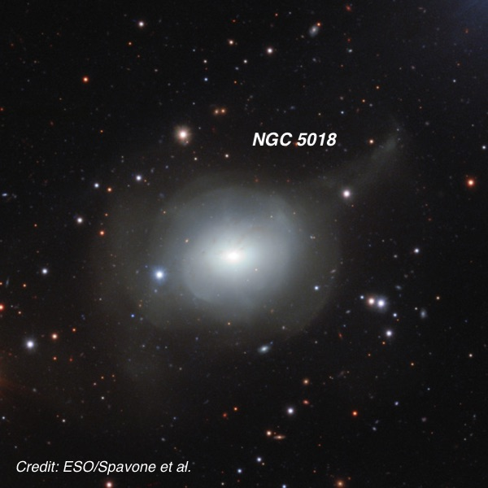
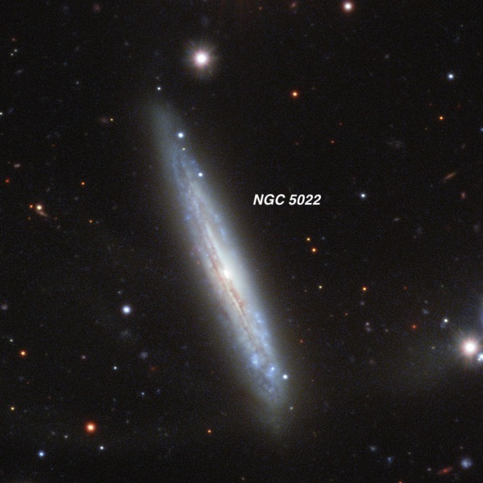
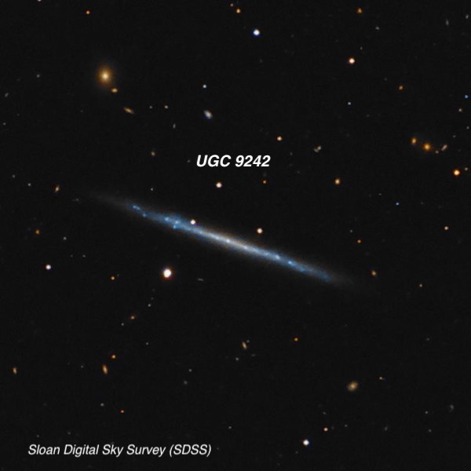
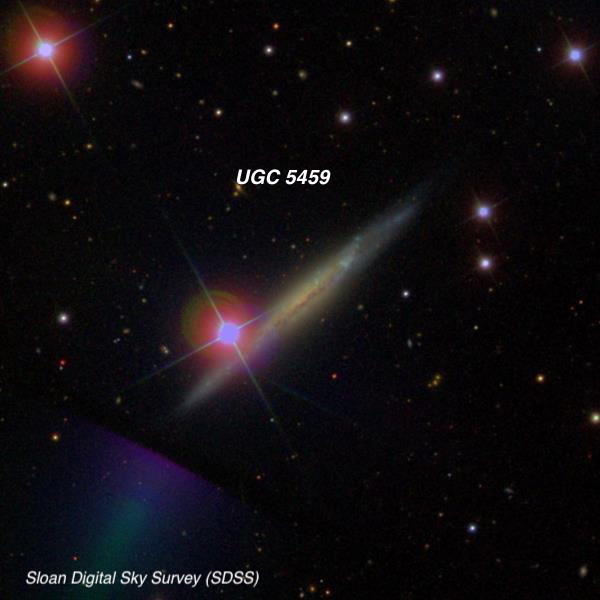

A Super-Night On April 10, 2021
Clear skies were predicted for Sonoma County (north of Santa Rosa) on Saturday night, April 10th, so I headed to Lake Sonoma, near Geyserville, and met a half-dozen other Bay Area observers. The forecast called for above average transparency, though the seeing was expected to be below average or poor. Instead of lugging my 24” Starstructure for one night, I decided to take my smaller scope - a 14.5” f/4.3 Starmaster (Zambuto optics), which made set up a snap and permitted using an adjustable observing chair over much of the sky.
It turned out the skies were crystal clear, except for one band of clouds that slowly passed through to the south, with above average darkness for this site (SQM readings of 21.4-21.5). We were surprised that the seeing turned out much better than expected, with pinpoint images at moderately high power. The one downside was a steady breeze that persisted through the night, enough to be an annoyance at times with a few loose charts flying off my table that I had to chase down. I took notes on 30 galaxies, so the ones below are just a small sample — but all follow the super theme. I returned to observe at the same site two nights later (Monday, April 12th) and will post a separate report.
Steve Gottlieb

As far as the super-night, one highlight was IC 3322A = UGC 7513 (12 25 42.9, +07 12 58), a fairly dim super-thin edge-on, a little over a degree southwest of M49 in the Virgo cluster and 20’ ESE of the giant elliptical NGC 4365 . The galaxy was stretched 10:1 NNW-SSE, roughly 2.0’x0.2’ — just a low surface brightness streak with no distinct core or nucleus.
But planted on its north tip was the “prominent” 13th magnitude Supernova! This Type Ia was discovered on March 30th at the Zwicky Transient Facility (ZTF) at Palomar, with a camera that captures a 47 square degree field and images 3750 sq. degrees per hour. The supernova, designated SN 2021hiz, is likely near maximum brightness as it dominated the glow of the edge-on galaxy!
  
Next was NGC 5018 , a bright elliptical in southern Virgo (13 11 45.7, -19 15 42). The galaxy was logged as "bright, fairly large, slightly elongated, ~1.8'x1.5', very strong and sharp concentration with a small, very bright core and an intense nucleus. A mag 14.6 star was seen just outside the halo.” NGC 5018 appears to be a post-merger as a deep image from the VLT Survey Telescope in the Atacama Desert reveals outer shells and star streams — likely the remains of a cannibalized galaxy. Just 7’ ESE is NGC 5022 , which I recorded as "fairly faint, very thin edge-on ~6:1 SSW-NNE, ~1.5'x0.25'. A mag 11.1 star is ~2 N. "
The real target, though, was another Type Ia supernova, SN 2021fxy, discovered nearly a month ago by Koichi Itagaki, a prolific supernova hunter from Japan with scores of discoveries to his name. It was seen as a mag 14.2 "star", just 20" N of center of the galaxy, close to the edge of the core and within the halo. A similar mag 14.1 star was noted 2' N of the galaxy.

UGC 9242 is a super-flat galaxy in Bootes (14 25 21.3, +39 32 18) — in fact, one of the narrowest known, with dimensions 5.0’x0.25’ (nearly 20:1 axial ratio). Here’s an excellent image from the late Rick Johnson, who often posted on CloudyNights. I’ve observed this galaxy several times before (including through Jimi Lowrey’s 48”), but this view was using Bob Douglas’ 18” Starmaster. It was an extremely faint sliver at least 2' in length. A mag 13 star is less than 1' S of the ENE tip and helps to pinpoint the position of the dim streak.

Although not quite as flat as the last galaxy, UGC 5459 in Ursa Major (10 08 10.3, +53 04 59) still qualifies as a super-thin (nearly bulge-less edge-on). It’s brighter than UGC 9242, but is nearly hiding behind a mag 8.7 star! At 158x, it wasn’t difficult — a nice streak extending ~2’x0.25’, seeming to shoot out from the star. The galaxy has a low surface brightness, though, with only a weak brightening towards the center. The superimposed star ( HD 87704 ) is one of 4 bright stars in the field forming a very distinctive rhombus shape.